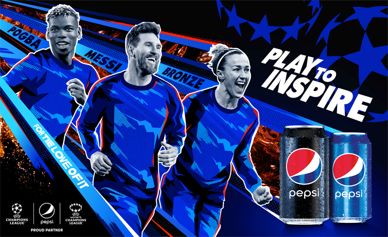
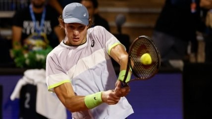

Deportes

|

|
|  |
Noticias Deportivas
|
Selección Sub 17 tras su triunfo ante la Celeste: “Dimos otro paso para clasificar al Mundial” DeportesEl vestuario de Chile era pura alegría. El triunfo ante Uruguay en el Sudamericano Sub 17, les devolvió la esperanza que habían perdido en su fallido debut ante Brasil.Pero con los goles de Alejandro Hales e Iván Román, la Rojita volvió a meterse en la competencia que busca los clasificados sudamericanos para la cita planetaria de la categoría. “Sacamos la tarea adelante y dimos otro paso para clasificar al Mundial”, asegura el autor del primer tanto.El jugador de Palestino agrega que “no podemos pensar más allá, debemos ir paso a paso. El miércoles nos toca con Colombia y el viernes con Ecuador |
¿Colo Colo y Ñublense por televisión abierta?: Copa Libertadores por Chilevisión DeportesColo Colo y Ñublense alistan los últimos detalles para el comienzo de su participación internacional en la Copa Libertadores, torneo que contará con transmisión para la televisión abierta gracias a Chilevisión. Este lunes la señal televisiva confirmó cuáles serán los duelos que estarán disponibles por la señal de aire, chilevisión.cl y el canal de Chilevisión Deportes en Pluto TV. Colo Colo será el primer equipo en saltar a la cancha y su primer duelo de visita contra Deportivo Pereira (Miércoles 5 de abril desde las 22.00 horas) es uno de los duelos escogidos.También serán transmitidos los choques de visita contra Monagas (23 de mayo, 18.00 horas). |

Nicolás Jarry cae sorpresivamente en la primera ronda del ATP de Marrakech DeportesNicolás Jarry no pudo demostrar sobre la cancha su favoritismo en la primera ronda del ATP de Marrakech. El chileno, 59° del ránking ATP cayó en su estreno en el torneo contra el italiano Andrea Vavassori (201°), jugador que ingresó al cuadro principal desde las clasificaciones por 6-2, 3-6 y 6-3.El primer set para el chileno inició de buena manera, consiguiendo sostener su servicio en los primeros juegos. Sin embargo una desconcentración en el quinto juego le comenzó a poner la competencia cuesta arriba.Vavassori aprovechó los fallos de Nico y pudo quitarle el saque en la primera oportunidad que tuvo en el duelo. |